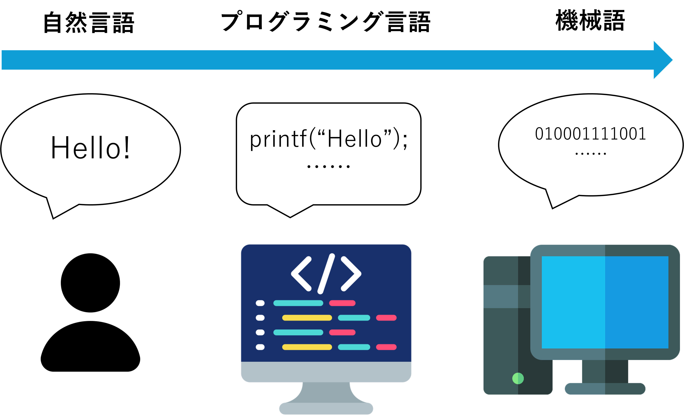

プログラミング言語とは？
今や、コンピュータは私たちの生活に欠かせない存在となりました。 スマートフォンやパソコン、タブレットなど、様々なデバイスが私たちの日常を支えています。 これらのデバイスは、どのようにして動いているのでしょうか。 この章では、コンピュータの動作には欠かせない 「プログラム」や「プログラミング言語」について学んでいきます。
目次
- プログラムってなに？
- プログラミング言語
- C言語
プログラムってなに？

「プログラム」という言葉には、そもそも”何かを順序だてて行うこと”という意味があります。 例として、運動会のプログラムを考えてみましょう。 まず初めに開会式があり、準備体操、応援合戦と続いていきますよね。 このように、プログラムは順序だてて行うことを指します。
コンピュータでのプログラムも同じです。 コンピュータは、人間が与えた命令を順番に実行していきます。 この命令を書いたものがプログラムと呼ばれています。
では、プログラムをコンピュータに伝えるためにはどうすればいいでしょうか。
プログラミング言語
コンピュータは0と1という数字のみを使用して計算を行っています。 つまり、コンピュータが理解できるのは0と1の組み合わせで書かれた命令ということになります。 （今後、このような0と1で示されたものを「機械語」と呼ぶことにします。） しかし困りました。人間は普段、自然言語（英語や日本語など）を使っています。 コンピュータの使う機械語とは、まったく異なる言語です。
人間は自然言語しか理解できず、コンピュータは機械語しか理解できない。 このままでは、人間とコンピュータの間には大きな壁があります。
そこで、人間とコンピュータの間に立ち、人間が書いたプログラムをコンピュータが理解できる機械語に変換してくれるツールが開発されました。 そこで使用される言語こそが、「プログラミング言語」というわけです。 また、プログラミング言語から機械語へ変換することを、「コンパイル」と呼びます。 ここからは、代表的なプログラミング言語、C言語について紹介していきます。
C言語

C言語は、1972年にアメリカのデニス・リッチーによって開発されたプログラミング言語です。 UNIXというOSのために開発されました。 習得には少々骨が折れますが、その高いパフォーマンスから、OSやアプリケーションソフトウェアの開発に広く使われています。
ここで、C言語の特徴を挙げてみましょう。
- 処理速度の速さ
- 高い拡張性
- メモリ消費量がすくない
- ハードウェアのプログラミングにも優れている
一つ一つ解説していきます
処理速度の速さ
C言語は、ほかのプログラミング言語に比べて処理速度が早いことが特徴です。 例として、同じく代表的な言語であるPythonと比較して考えてみましょう。 Pythonは、C言語に比べて処理速度が遅いとされています。 これは、Pythonがインタプリタ言語であるためです。 インタプリタ言語とは、プログラムを一行ずつ解釈して実行する言語のことです。 それに対してC言語は、コンパイル言語という種類に属します。 コンパイル言語とは、プログラムをすべてコンパイルし、機械語に変換してから実行する言語のことです。 先ほど紹介した、一行ずつ解釈して実行するインタプリタ言語に比べて、処理速度が速くなるというわけです。
| C言語 | Python |
|---|---|
| コンパイル言語 | インタプリタ言語 |
| 一気にコンパイル・実行 | １行ずつ解釈・実行 |
| 処理速度が速い | 処理速度が遅い |
高い拡張性
C言語単体でできることは比較的シンプルで、できることといえば計算程度です。 しかし、ライブラリと呼ばれる拡張機能を使うことで、グラフィックスやネットワーク、音声などの高度な処理も可能になります。 言語そのものの拡張性が感じられると思います。


メモリ消費量がすくない
C言語は、メモリ消費量が少ないことが特徴です。 これは、C言語が低水準言語であるためです。 低水準言語とは簡単に言うと、コンピュータの機械語に近い言語のことです。 数ある言語を比べても、C言語はよりコンピュータに近い言語であるといわれています。 そのためコンピュータがプログラムを処理しやすく、メモリ消費量が少ないというわけです。
ハードウェアのプログラミングにも優れている
C言語は、ハードウェアのプログラミングにも優れています。 マイコンと呼ばれる小型のコンピュータをプログラミングする際にも、C言語が使われることが多いです。 例としてArduinoというマイコンがありますが、ArduinoのプログラムはC言語をベースに書かれています。 また、OSのカーネルやデバイスドライバなどもC言語で書かれています。 ハードウェアに直接アクセスするプログラムを書く際には、C言語が適しているといえます。
Programming language icons created by Alla Afanasenko - Flaticon